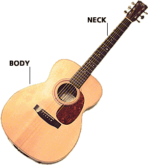
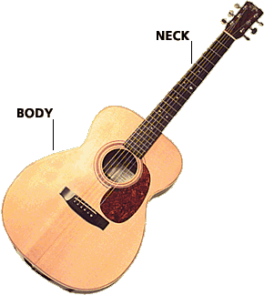

Prestations de réparations
Pour une liste des prestations de réparations dont nous nous occupons, cliquez sur la partie de la guitare qui vous intéresse.
Pour une liste des prestations de réparations dont nous nous occupons, cliquez sur la partie de la guitare qui vous intéresse.
